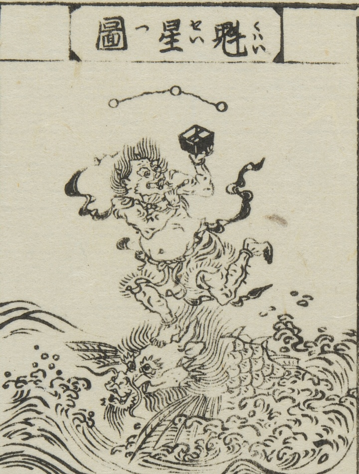

鬼形の姿をした魁星は左手に筆、右手に升を持ち、角や尖ったヒレをもつ生き物の上に乗っている。
著作者：平住専庵・橘有税画／出典：親書誌：U426_nichibunken_0476：唐土訓蒙圖彙；モロコシキンモウズイ／日付：2025／資源識別子：U426_nichibunken_0476_0001_0000
Copyright (c)2010- International Research Center for Japanese Studies, Kyoto, Japan. All rights reserved.